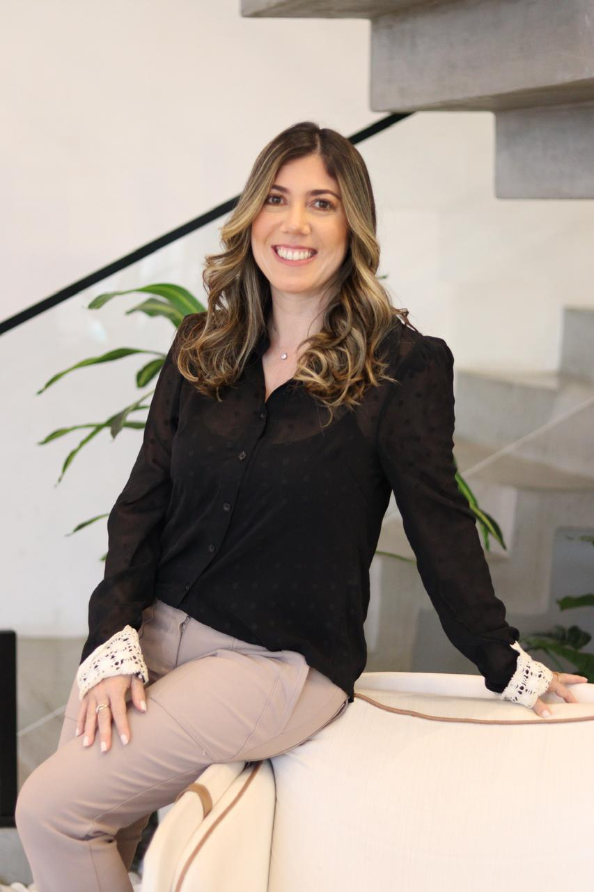

Sobrecarga constante
A sensação de estar sempre no limite, sem tempo de respirar, mesmo quando o dia termina.
Bem-vindo(a). Você chegou a um lugar de escuta e acolhimento.
Iniciar a psicoterapia é um gesto de cuidado consigo mesmo. Aqui é possível elaborar experiências, compreender sentimentos e lidar de forma mais saudável com os desafios da vida. Atendimentos online, de onde você estiver, ou presencialmente na região de Alphaville.
Cuidar da saúde emocional é um passo de coragem — e você não precisa dar esse passo sozinho(a).
São situações comuns, que aparecem no meio da rotina e vão pesando aos poucos. Nenhuma delas precisa ser enfrentada sozinha.
A sensação de estar sempre no limite, sem tempo de respirar, mesmo quando o dia termina.
As emoções parecem intensas, difíceis de compreender ou controlar, e você não sabe bem como lidar com elas.
A mente não desacelera, você se preocupa constantemente ou sente dificuldade para relaxar.
Discussões que se repetem, dificuldade de se posicionar ou de ser compreendido por quem está perto.
Psicóloga Clínica · CRP 06/229501
Olá, prazer. Realizo atendimentos para adultos e idosos, nas modalidades online e presencial na região de Alphaville. Minha atuação é pautada pelo acolhimento, pela ética e pelo compromisso com o bem-estar emocional de cada paciente.
Acredito na terapia como um espaço seguro de escuta qualificada, reflexão e construção de novas possibilidades, respeitando a singularidade de cada história.
Minha escuta é fundamentada na Psicologia Comportamental, integrando abordagens como a Terapia Cognitivo-Comportamental (TCC) e a Análise Funcional do Comportamento. A partir dessa perspectiva, busco compreender não apenas pensamentos e emoções, mas também a história de vida de cada pessoa e os contextos que influenciam seus comportamentos, escolhas e relacionamentos.
O atendimento é individualizado e construído a partir das necessidades e particularidades de cada paciente. Meu trabalho é pautado em uma escuta ética, acolhedora e tecnicamente fundamentada, buscando oferecer um espaço seguro para que você possa compreender melhor suas experiências e desenvolver novas possibilidades diante dos desafios da vida.
A psicoterapia pode ser um caminho de autoconhecimento, fortalecimento emocional e desenvolvimento de recursos para lidar de maneira mais consciente e saudável com pensamentos, emoções e comportamentos. Ao longo desse processo, você pode aprender estratégias que favoreçam relações mais satisfatórias, maior equilíbrio emocional e uma vida mais alinhada ao que é significativo para você.
Etapas do caminho que vamos construir juntos — sempre no seu tempo e de forma colaborativa.
O primeiro momento é dedicado a compreender o que trouxe você à psicoterapia. É um espaço para falar, esclarecer dúvidas, alinhar expectativas e conhecer como funciona o processo.
Na perspectiva da TCC, buscamos compreender a relação entre situações, pensamentos, emoções e comportamentos, identificando padrões e fatores relacionados ao sofrimento. Essa compreensão orienta a definição dos objetivos e das estratégias terapêuticas.
A partir do que construímos nas primeiras sessões, definimos juntos os objetivos e prioridades da terapia. Eles podem ser revisados ao longo do processo, conforme suas necessidades e evolução.
Utilizamos estratégias baseadas em evidências para desenvolver novas formas de lidar com pensamentos, emoções e comportamentos, levando esses aprendizados para o dia a dia.
Acompanhamos sua evolução, revisamos os objetivos e ajustamos as estratégias conforme suas necessidades. O processo é individualizado e acompanha seu ritmo.
Quando os objetivos são alcançados, o encerramento é construído em conjunto, podendo envolver o espaçamento das sessões e o fortalecimento da autonomia desenvolvida ao longo da terapia.

A psicoterapia online permite o atendimento em qualquer lugar do mundo. Minha trajetória inclui experiência de vivência no exterior, o que amplia minha compreensão sobre os impactos emocionais relacionados à mudança de país e à reconstrução de identidade em uma nova cultura.
Mesmo à distância, o vínculo, a atenção e o cuidado permanecem os mesmos. Você continua sendo ouvido com respeito, sensibilidade e profissionalismo, em um ambiente protegido e ético.

A psicoterapia é um espaço seguro, confidencial e acolhedor, voltado para pessoas que desejam compreender melhor suas emoções, enfrentar desafios e promover mudanças significativas. Pode ser especialmente indicada para:
Segunda a sexta: 08h às 20h
Sábados: sob consulta
Online para todo o mundo
Presencial na região de Alphaville: sob consulta
(11) 98940-5665
Me chame no WhatsApp para tirar suas dúvidas e agendar a primeira sessão. Respondo pessoalmente.